승강기기사 (2018-09-15 기출문제)
1과목: 승강기 개론
1. 다음 괄호 안의 내용으로 옳은 것은?
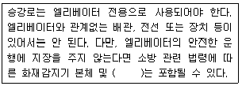
- 비상용 소화기
- 비상용 전화기
- 비상용 경보기
- 비상방송용 스피커
(정답률: 80%)

2. 승강장 문이 열려진 위치에서 모든 제약으로부터 해제가 되면 자동으로 닫히게 되는 장치는?
- 도어 록
- 도어 머신
- 도어 클로저
- 도어 스위치
(정답률: 80%)
3. 에스컬레이터의 공칭속도가 0.65m/s일 때 정지거리의 범위로 옳은 것은?
- 0.20m에서 1.00m 사이
- 0.30m에서, 1.20m 사이
- 0.30m에서, 1.30m 사이
- 0.40m에서, 1.50m 사이
(정답률: 76%)
4. 균형추의 주량을 정할 때 사용하는 오버밸런스(over balance)율이란 무엇인가?
- 카의 중량과 균형추 중량의 비율을 말한다.
- 카의 자체 중량과 적재하중의 비율을 말한다.
- 균형추의 무게와 전부하시의 카의 무게와의 비율을 말한다.
- 균형추의 총 중량을 정할 때 빈 카의 자중에 적재하중의 몇 %를 더 할 것인가를 나타내는 비율을 말한다.
(정답률: 76%)
5. 필러형 29본선 6꼬임 중심섬유인 로프의 구성기호는?
- 6×F(29)
- 6×Fi(29)
- 6×Fi+29×F
- 6×F(Fil9+F10)
(정답률: 81%)
6. 승강기의 신호장치 중 홀랜턴(Hall Lantern)을 설치하는 경우는?
- 주택용 승강기의 1층에 설치
- 미관용으로 고급 승강기에 설치
- 비사용 승강기의 비상을 알리기 위해 설치
- 군 관리방식의 여러 대의 승강기를 운행할 때 인디게이터 대신 설치
(정답률: 87%)
7. 로프 마모 및 파손상태 검사의 합격기준으로 옳은 것은?
- 소선의 파단이 균등하게 분포되어 있는 경우, 1구성 꼬임(스트랜드)의 1꼬임 피치내에서 파단 수 3 이하
- 소선의 파단이 균등하게 분포되어 있는 경우, 1구성 꼬임(스트랜드)의 1꼬임 피치내에서 파단 수 2 이하
- 소선에 녹이 심한 경우, 1구성 꼬임(스트랜드)의 1꼬임 피치 내에서 파단 수 3 이하
- 파단 소선의 단면적이 원래의 소선 단면적의 70% 이하로 되어 있는 경우, 1구성 꼬임(스트랜드)의 1꼬임 피치 내에서 파단 수 2 이하
(정답률: 75%)
8. 로프식 엘리베이터용 구동방식으로 옳은 것은?
- 간접식
- 직접식
- 권동식
- 리니어모터식
(정답률: 78%)
9. 2대 이상의 엘리베이터가 동일 승강로에 설치될 때 2대의 카의 측부에 비상구출문을 설치될 때 2대의 카의 측부에 비상구출문을 설치할 수 있다. 이와 같은 경우의 구조와 관계가 없는 것은?
- 문이 열려 있는 동안은 운전이 불가능하다.
- 이 문은 벽의 일부가 외부방향으로 열린다.
- 내부에서는 열쇠를 사용해야만 열 수 있다.
- 외부에서는 열쇠 없이도 비상구출문을 열 수 있다.
(정답률: 64%)
10. 소형 엘리베이터의 정격속도는 몇 m/s 이하여야 하는가?
- 0.15
- 0.25
- 0.35
- 0.45
(정답률: 65%)
11. 직접식 유압엘리베이터의 특징으로 볼 수 없는 것은?
- 실린더의 점검이 용이하다.
- 비상정지장치가 필요하지 않다.
- 승강로 소용면적 치수가 작고 구조가 간단하다.
- 실린더를 설치하기 위한 보호관을 지중에 설치하여야 한다.
(정답률: 68%)
12. 유압회로의 하나인 미터인(meter-in) 회로에 대한 특징을 옳게 설명한 것은?
- 정확한 속도제어가 가능하고 효율이 좋다.
- 정확한 속도제어는 곤란하나 효율이 좋다.
- 정확한 속도제어도 곤란하고 효율도 나쁘다.
- 정확한 속도제어가 가능하나 효율이 비교적 나쁘다.
(정답률: 79%)
13. 엘리베이터용 도어 안정장치에 해당되는 것은?
- 세이프티 슈
- 역결상 검출장치
- 과부하 감지장치
- 록다운 정지장치
(정답률: 82%)
14. 소선강도에 의한 와이어로프의 설명 중 옳은 것은?
- E종은 150kgf/mm2급 강도의 소선으로 구성된 로프이다.
- B종은 강도와 경도가 E종보다 더욱 높아 엘리베이터용으로 사용된다.
- G종은 소선의 표면에 아연도금한 로프로 다습환경의 장소에 사용된다.
- A종은 일반 와이어로프와 비교하여 탄소량을 작게 하고 경도를 낮춘 것으로 135kgf/mm2급이다.
(정답률: 82%)
15. 과부하감지장치가 작동할 때의 사항으로 틀린 것은?
- 경보가 울려야 한다.
- 출입문의 닫힘을 자동적으로 제지하여야 한다.
- 주행 중에도 과부하가 감지되면 경보가 울려야 한다.
- 초과 하중이 해소되기까지 카는 움직이지 않아야 한다.
(정답률: 79%)
16. VVVF 제어에서 인버터 제어방식을 나타내는 시스템은?
- 교류궤환 전압제어
- 사이리스터 전압제어
- PWM(Pulse Width Moduation)
- PAM(Pulse Amplitude Moduation)
(정답률: 79%)
17. 엘리베이터를 동력 매체별로 분류할 때 나사의 홈 기둥을 따라 케이지가 상하로 움직이도록 한 것으로서 유체 사용을 피하고자 하는 경우에 이용되는 엘리베이터는?
- 로프식
- 스크류식
- 플랜저식
- 랙피니온식
(정답률: 61%)
18. 동력전원이 끊어졌을 때 즉시 작동하여 에스컬레이터를 정지시키는 장치는?
- 조속기장치
- 머신브레이크
- 구동체인 안전장치
- 전자-기계 브레이크
(정답률: 73%)
19. 균형추 방식의 엘리베이터에 대한 설명 중 옳은 것은?
- 유압식엘립이터에 비하여 승강로 면적을 작게 할 수 있다.
- 균형추에 의하여 균형을 잡으므로 키가 미끄러질 염려는 없다.
- 동일한 용량과 속도인 경우 권동식에 비하여 구동 전동기의 출력용량을 줄일 수 있다.
- 무거운 균형추를 사용하므로 균형추를 사용하지 않는 경우보다 큰 출력의 전동기가 필요하다.
(정답률: 65%)
20. 카 비상정지장치가 작동될 때, 부하가 없거나 부하가 균일하게 분포된 카의 바닥은 정상적인 위치에서 몇 %를 초과하여 기울어지지 않아야 하는가?
- 3
- 5
- 10
- 20
(정답률: 78%)
2과목: 승강기 설계
21. 윙기어와 헬리컬기어 감속기의 특성을 비교한 설명으로 틀린 것은?
- 윙기어가 헬리컬기어에 비해 소음이 작다.
- 윙기어가 헬리컬기어에 비해 효율이 낮다.
- 윙기어가 헬리컬기어에 비해 역구동이 쉽다.
- 윙기어가 헬리컬기어에 비해 저속용으로 사용한다.
(정답률: 73%)
22. 적재하중이 550kg, 카자중이 700kg이고, 단면적, 단면계수 224.6cm3인 SS-400을 1본 사용할 때 1:1 로핑인 경우 상부체대의 응력은 약 몇 kg/cm2인가? (단, 상부체대의 길이는 160cm이다.)
- 55.7
- 111.3
- 222.6
- 445.2
(정답률: 55%)
23. 정격속도 90m/min인 엘리베이터의 에너지분사형 완충기에 필요한 최소행정거리는 약 몇 mm인가?
- 120
- 152
- 207
- 270
(정답률: 61%)
24. 로프식 엘리베이터의 기계식 출입문의 폭과 높이로서 적당한 것은?
- 폭 70cm 이상, 높이 1.6m 이상
- 폭 70cm 이상, 높이 1.8m 이상
- 폭 60cm 이상, 높이 1.6m 이상
- 폭 60cm 이상, 높이 1.8m 이상
(정답률: 77%)
25. 엘리베이터 교통량 계산에서 필요한 기초자료에 해당되지 않는 것은?
- 층고
- 층별 용도
- 빌딩의 용도
- 기계실의 크기
(정답률: 75%)
26. 전부하 회전수가 1500rpm이고 출력이 15kw인 전동기의 전부하 토크는 약 몇 kg/m인가?
- 9.74
- 19.48
- 1948
- 9740
(정답률: 61%)
27. 카측 스프링완충기의 스프링 직경이 150mm, 소선직경이 30mm 일때 전단응력은 약 몇 kg/cm2인가? (단, 카 자중은 1200kg, 정격자중은 1000kg으로 한다.)
- 31.2
- 62.3
- 3114
- 6225
(정답률: 20%)
28. 그림은 전력용 트랜지스터를 사용한 전력변환 회로의 일부이다. 회로의 설명 중 틀린 것은?
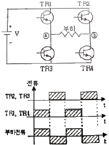
- 직류 압력을 교류 출력으로 바꾸어주는 인버터 회로이다.
- 트랜지스터 대신에 SCR을 사용하여도 오른쪽 파형을 얻을 수 있다.
- TR2와 TR3이 도통하면 부하에 ⓐ에서 ⓑ방향으로 전류가 흐른다.
- PWM(pluse width modulation)제어를 이용하여 출력주파수를 변화할 수 있다.
(정답률: 62%)
29. 엘리베이터의 일반적인 관제운전에 속하지 않는 것은?
- 지진 시의 관제운전
- 화재 시의 관제운전
- 폭풍 시의 관제운전
- 정전 시의 관제운전
(정답률: 77%)
30. 승강장문 잠금장치의 기능으로 틀린 것은?
- 잠금 부품이 5mm이상 물려지기 전에는 카가 출발하지 않아야 한다.
- 잠금 작용은 중력, 영구자석 또는 스프링에 의해 이루어지고 유지되어야 한다.
- 각 승강장문은 승강로 밖(승강장)에서 열쇠로 잠금이 해제되어야 한다.
- 잠금 부품은 문이 열리는 방향으로 300N의 힘을 가할 때 잠금 효력이 감소되지 않는 방법으로 물려야 한다.
(정답률: 59%)
31. 전기식 엘리베이터에서 카가 완전히 압축된 완충기 위에 있을 때 검사항목 중 틀린 내용은?(관련 규정 개정전 문제로 여기서는 기존 정답인 1번을 누르면 정답 처리됩니다. 자세한 내용은 해설을 참고하세요.)
- 피트 바닥과 카의 가장 낮은 부품 사이의 수직거리는 0.3m 이상이어야 한다.
- 피트에는 0.5m×0.6m×1.0m 이상의 장방형 블록을 수용할 수 있는 충분한 공간이 있어야 한다.
- 피트에 고정된 가장 높은 부품과 카의 가장 낮은 부품 사이의 수직거리는 0.3m 이상이어야 한다.
- 피트 바닥과 카의 가장 낮은 부품 사이의 수직 거리는 에이프런 또는 수직 개폐식 카문과 인접한 벽사이의 수평거리가 0.15m이내인 경우에 최소 0.1m까지 감소될 수 있다.
(정답률: 53%)
32. 엘리베이터의 수송능력을 계산할 때 일반적으로 몇 분간의 교통수요를 기준으로 하는가?
- 5분
- 10분
- 30분
- 60분
(정답률: 74%)
33. 엘리베이터에서 발생될 수 있는 좌굴에 대한 설명 중 틀린 것은?
- 레일 브래킷의 간격이 넓은 쪽이 좌굴을 일으키기 쉽다.
- 카 또는 균형추의 총 중량이 큰 쪽이 좌굴을 일으키기 쉽다.
- 좌굴하중은 불균형한 큰 하중이 적재되었을 때 발생하는 힘이다.
- 즉시작동형 비상정지장치 쪽이 점차작동형 비상정지장치 쪽보다 좌굴을 일으키기 쉽다.
(정답률: 48%)
34. 그림과 같이 거리와 정지력 관계를 나타낼 수 있는 비상정지장치는?
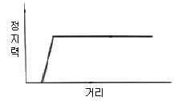
- 로프이완비상정지장치(Slack rope safety gear)
- F.G.C형비상정지장치(Flexible guide clamp)
- F.W.C형비상정지장치(Flexible wedge clamp)
- 즉시작동형비상정지장치(Instantaneous safety gear)
(정답률: 69%)
35. 엘리베이터의 승강로에 관하여 틀린 것은?
- 비상용엘리베이터의 승강로는 전층 단일구조 연결하여야 한다.
- 승강로는 적절하게 환기되어야 하며 기타용도의 환기실로도 사용될 수 있다.
- 2대 이상의 엘리베이터가 있는 승강로에는 서로 다른 엘리베이터의 움직이는 부품사이에 칸막이가 설치되어야 한다.
- 균형추 또는 평형추의 주행구간은 엘리베이터의 피트 바닥으로부터 0.3m 이하부터 2.0m 이상의 높이까지 연장된 견고한 칸막이로 보호되어야 한다.
(정답률: 68%)
36. 기어의 특징에 대한 설명으로 옳은 것은?
- 효율이 낮다.
- 감속비가 작다.
- 정밀도가 필요하다.
- 동력전달이 불확실하다.
(정답률: 62%)
37. 선형 또는 비선형 특성을 갖는 에너지 축적형 완충기를 사용할 수 있는 전기식 엘리베이터의 정격속도는?
- 1.0m/s 이하
- 1.5m/s 이상
- 1.75m/s 이하
- 2.75m/s 이상
(정답률: 65%)
38. 사이리스터를 사용하여 교류를 직류로 변환시켜 전동기에 공급하고 사이리스터의 점호각을 바꿈으로서 직류전압을 바꿔 직류 전동기의 회전수를 변경하는 승강기의 제어방식은?
- 워드레오나드방식
- 정지레오나드방식
- 교류궤환제러방식
- PWM인버터제어방식
(정답률: 61%)
39. 엘리베이터의 정격하중 1500lg, 정격속도 180m/min, 엘리베이터의 종합효율 80%, 오버밸런스율이 50%인 경우 전동기의 출력은 약 몇 kW인가?
- 25.16
- 27.57
- 32.72
- 36.25
(정답률: 65%)
40. 비상용 엘리베이터에 관한 사항으로 틀린 것은?
- 비상용 엘리베이터의 운행속도는 1m/s이상이어야 한다.
- 비상용 엘리베이터의 출입구 유효 폭은 800mm 이상이어야 한다.
- 비상용 엘리베이터의 크기는 630kg의 정격하중을 갖는 폭 1100mm, 깊이 1400mm이상 이어야 한다.
- 비상용 엘리베이터는 소방관이 조작하여 엘리베이터 문이 닫힌 이후부터 90초 이내에 가장 먼 층에 도착하여야 한다.
(정답률: 71%)
3과목: 일반기계공학
41. 기어펌프의 모듈이 3, 잇수 16, 잇폭 18mm인 펌프가 1200r/min으로 회전하면 이론적인 송출량은 약 몇 L/min 인가?
- 39.0
- 19.5
- 9.75
- 4.87
(정답률: 32%)
42. 드릴링 머신에서 너트나 볼트의 머리와 접촉하는 면을 평면으로 파는 작업은?
- 리밍
- 보링
- 태핑
- 스폿 페이싱
(정답률: 57%)
43. 체인 전동장치의 특징으로 옳지 않은 것은?
- 소음이 적고 고속회전에 적합하다.
- 미끄럼이 없는 정확한 속도비가 얻어 진다.
- 큰 동력을 전달시킬 수 있고 전동 효율이 좋다.
- 체인 길이의 신축이 가능하고, 다축전도이 용이하다.
(정답률: 69%)
44. 철강제품의 대표적인 표면처리 경화법이 아닌 것은?
- 침탄 경화법(cardburizing)
- 화염 경화법(flame hardening)
- 서브제로처리(sub-zero treatment)
- 고주파 경화법(induction hardening)
(정답률: 62%)
45. 원형 단면의 도심축에 대한 단면 2차 모멘트(I) 식은? (단, d는 원형 단면의 지름이다.)
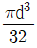
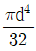
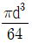
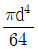
(정답률: 41%)
46. 원형 단면축이 비틀림 모멘트를 받을 때, 축에 생기는 최대전단응력에 관한 설명으로 옳은 것은?
- 극단면계수에 반비례한다.
- 극단면 2차 모멘트에 비례한다.
- 축의 지름이 증가하면 증가한다.
- 비틀림 모멘트가 증가하면 감소한다.
(정답률: 34%)
47. 특수주조법으로 금형 속에 용융금속을 고압, 고속으로 주입하여 주조하는 것으로 대량 생산에 적합하고 고정밀 제품에 사용하는 주조법은?
- 셸 몰드법
- 원심 주조법
- 다이 캐스팅법
- 인베스트먼트법
(정답률: 59%)
48. 재료가 일정온도에서 일정하중을 장시간동안 받은 경우 서서히 변화하는 현상은?
- 피닝(peening)
- 크로마이징(chromizing)
- 어닐링(annealing)
- 크리프creep)
(정답률: 69%)
49. 보일러와 같이 안지름에 비하여 강판의 두께가 얇은 원통이 균일한 내압을 받고 있는 경우 원주방향 응력은 축방향 응력의 몇 배인가?
- 1/2
- 1/4
- 2
- 4
(정답률: 34%)
50. 코일 스프링에서 코일의 평균지름을 D(mm), 소선의 지름을 d(mm)라고 할 때 스프링 계수를 바르게 표현한 것은?(오류 신고가 접수된 문제입니다. 반드시 정답과 해설을 확인하시기 바랍니다.)
- D/d
- d/D
- πD/d
- 2πd/D
(정답률: 67%)
51. 구멍(축)의 허용한곗치수의 해석에서 다음과 같은 원리를 무엇이라고 하는가?
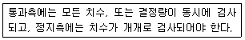
- 아베(Abbe)의 원리
- 자콥스(Jacobs)의 원리
- 테일러(Taylor)의 원리
- 브라운 샤프(Brown sharp)의 원리
(정답률: 61%)
52. 합금 주철에 첨가하는 원소 중에서 흑연화를 방지하고 탄화물을 안정시켜주는 것으로 이 원소를 많이 넣게 될 경우 고온에서 내열성은 증가하나 절삭성이 어려워지는 것은?
- Ni
- Ti
- Mo
- Cr
(정답률: 53%)
53. 나사의 크기를 나타내는 지름을 호칭 지름이라 하는데 무엇을 기준으로 하는가?
- 수나사의 골지름
- 수나사의 바깥지름
- 수나사의 유효지름
- 수나사의 평균지름
(정답률: 65%)
54. 축의 지름은 d, 축 재료의 전단응력을 τ라 할 때, 비틀림 모멘트를 나타내는 식은?
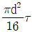
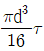
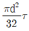
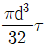
(정답률: 50%)
55. 축에 홈을 파지 않고도 회전력을 전달시킬 수 있는 키는?
- 안장 키
- 반달 키
- 둥근 키
- 성크 키
(정답률: 61%)
56. 용접법의 분유 중 압접(pressure welding)에 해당하는 것은?
- 스터드 용접
- 테르밋 용접
- 프로젝션 용접
- 피복 아크 용접
(정답률: 43%)
57. 공유압 밸브의 분류에서 방향제어밸브에 속하는 것은?
- 교축밸브
- 셔틀밸브
- 릴리프밸브
- 카운트밸러스밸브
(정답률: 54%)
58. 단면적 450mm2, 길이 50mm의 연강봉에 39.5kN의 인장하중이 작용했을 때 늘어난 길이가 0.20mm 이었다면 발생한 인장응력은 약 몇 Mpa인가?
- 175.6
- 87.8
- 79.0
- 43.9
(정답률: 39%)
59. 금속의 소성가공에서 냉간가공과 열간가공으로 구분하는 온도는?
- 불림 온도
- 풀림 온도
- 담금질 온도
- 재결정 온도
(정답률: 61%)
60. 유압 작동유의 구비조건으로 옳지 않은 것은?
- 비압축성이어야 한다.
- 열을 방출시키지 않아야 한다.
- 녹이나 부식 발생 등이 방지되어야 한다.
- 장시간 사용하여도 화학적으로 안정적이어야 한다.
(정답률: 61%)
4과목: 전기제어공학
61. 제어계의 분류에서 엘리베이터에 적용되는 제어방법은?
- 정치제어
- 추종제어
- 비율제어
- 프로그램제어
(정답률: 68%)
62. 기계적 제어의 요소로서 변위를 공기압으로 변환하는 요소는?
- 벨로즈
- 피스톤
- 다이아프램
- 노즐 플래퍼
(정답률: 48%)
63. 과도 응답의 소멸되는 정도를 나타내는 감쇠비(decay ratio)를 올바르게 나타낸 것은?>
- 제2 오버슈트/최대 오버슈트
- 제2 오버슈트/제3 오버슈트
- 제2 오버슈트/제2 오버슈트
- 최대 오버슈트/제2 오버슈트
(정답률: 60%)
64. 비례동작에 의해 발생한 전류편차를 제거하기 위하여 적분동작을 첨가시킨 제어동작은?
- P동작
- I동작
- D동작
- PI동작
(정답률: 53%)
65. 200V, 2kW 전열기에서 전열선의 길이를 1/2로 할 경우 소비전력(kW)은?
- 1
- 2
- 5
- 4
(정답률: 43%)
66. 전류의 측정 범위를 확대하기 위하여 사용되는 것은?
- 배율기
- 분류기
- 저항기
- 게기용변압기
(정답률: 57%)
67. 권선형 유도전동기에 관한 설명으로 옳지 않은 것은?
- 기동저항기로 기동전류를 제한할 수 있다.
- 농형 유도전동기에 비해 구조가 복잡하다.
- 슬립링이 없기 때문에 불꽃의 염려가 없다.
- 회전자권선에 접속되어 있는 기동저항기로 손쉽게 속도조정을 할 수 있다.
(정답률: 52%)
68. 100Ω의 저항 3개를 Y결선한 것을 Δ결선으로 환산했을 때 각 저항의 크기는 몇 Ω인가?
- 33
- 50
- 300
- 600
(정답률: 48%)
69. 그림과 같이 트랜지스터를 사용하여 논리조사를 구성한 논리회로의 명칭은?
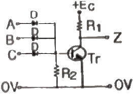
- OR회로
- AND회로
- NOR회로
- NAND회로
(정답률: 45%)
70. 그림의 선도에서 전달함수 C(s)/R(s)는?
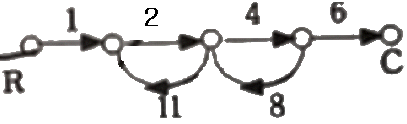
- -8/9
- 4/5
- -48/53
- -1⑤/77
(정답률: 60%)
71. 발전기에 적용되는 법칙으로 유도기전력의 방향을 알기 위하여 사용되는 것은?
- 오옴의 법칙
- 페러데이의 법칙
- 플레밍의 왼손 법칙
- 플레밍의 오른손 법칙
(정답률: 57%)
72. 유도전동기에서 극수가 일정할 때 동기속도(Ns)와 주파수(f)와의 관계에 관한 설명으로 옳은 것은?(오류 신고가 접수된 문제입니다. 반드시 정답과 해설을 확인하시기 바랍니다.)
- 동기속도는 주파수에 비례한다.
- 동기속도는 주파수에 반비례한다.
- 동기속도는 주파수에 제곱에 비례한다.
- 동기속도는 주파수에 제곱에 반비례한다.
(정답률: 51%)
73. 어떤 코일에 흐르는 전류가 0.01초 사이에 30A에서 10A로 변할 때 20V의 기전력이 발생한다고 하면 자기 인덕턴스는 얼마인가?(오류 신고가 접수된 문제입니다. 반드시 정답과 해설을 확인하시기 바랍니다.)
- 10mH
- 20mH
- 30mH
- 50mH
(정답률: 34%)
74. 제어 결과로 사이클링과 옵셋을 발생시키는 동작은?
- ON-OFF 동작
- P 동작
- I 동작
- PI 동작
(정답률: 60%)
75. 피드백 제어계의 구성 요소 중 제어동작 신호를 받아 조작량으로 바꾸는 역할을 하는 것은?
- 설정부
- 비교부
- 조작부
- 검출부
(정답률: 45%)
76. 주파수 응답에 필요한 입력은?
- 계단 입력
- 램프 입력
- 임펄스 입력
- 정현파 입력
(정답률: 51%)
77. 4kΩ의 저항에 25mA의 전류를 흘리는 데 필요한 전압(V)은?
- 10
- 100
- 160
- 200
(정답률: 57%)
78. RLC 병렬회로에서 용량성 회로가 되기 위한 조건은?
- XL=XC
- XL＞XC
- XL＜XC
- XL+XC=0
(정답률: 44%)
79. 피드백 제어시스템의 피드백 효과로 옳지 않은 것은?
- 대역폭 증가
- 정확도 개선
- 시스템 간소화 및 비용 감소
- 외부 조건의 변화에 대한 영향 감소
(정답률: 55%)
80. 피드백 제어에서 반드시 필요한 장치는?
- 안정도를 좋게 하는 장치
- 대역폭을 감소시키는 장치
- 응답속도를 빠르게 하는 장치
- 입력과 출력을 비교하는 장치
(정답률: 60%)